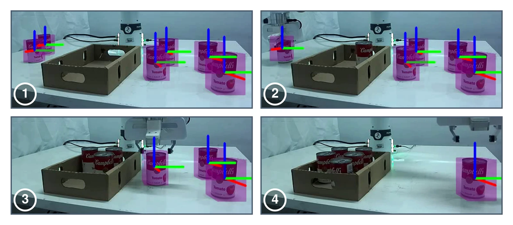
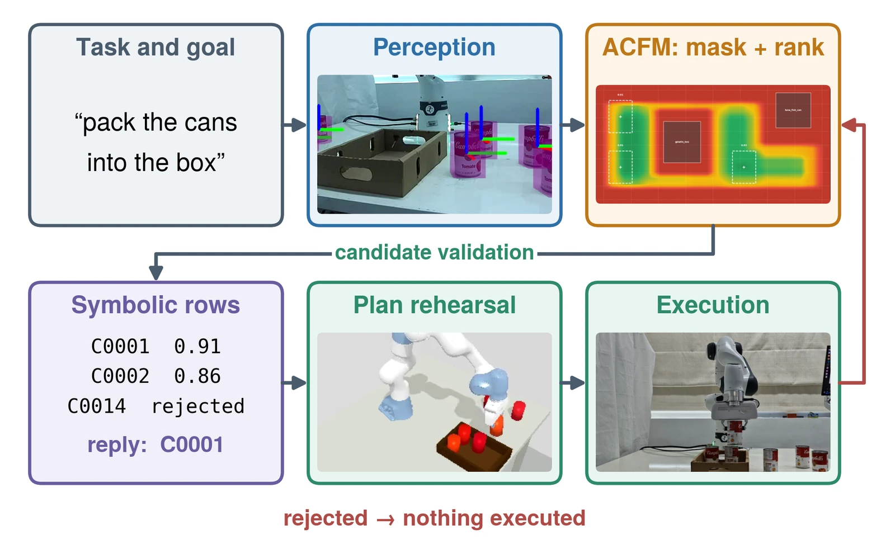
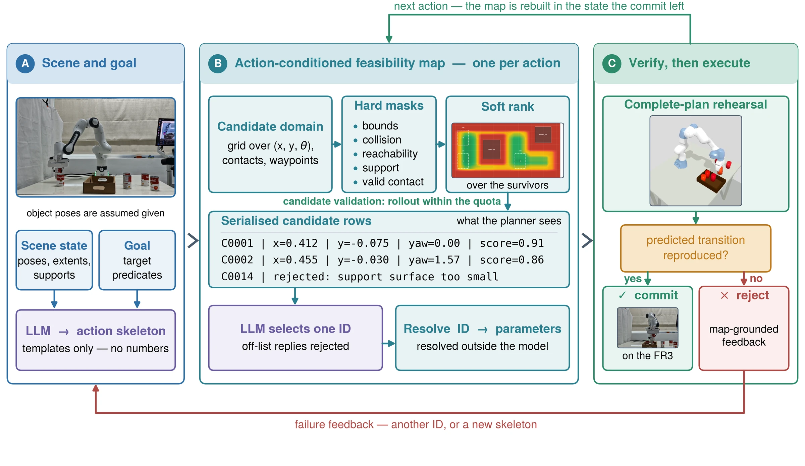
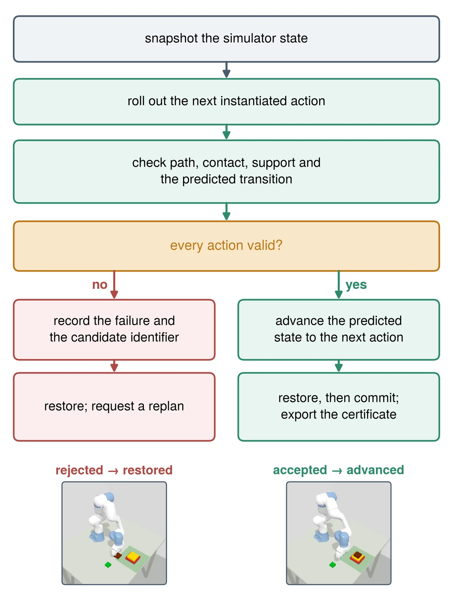
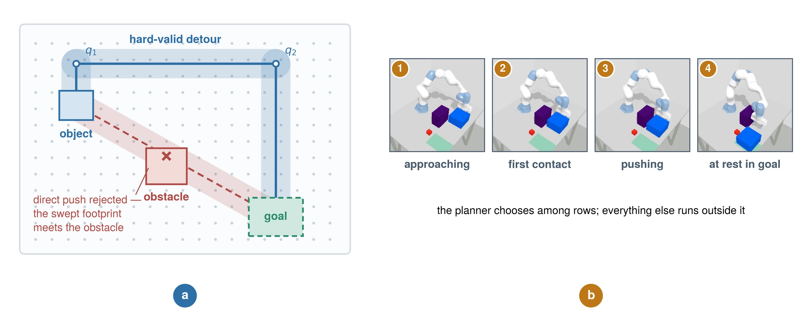
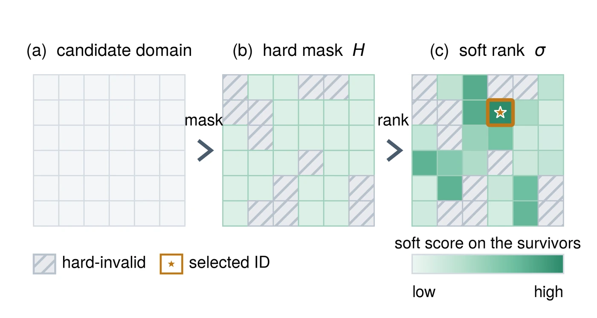
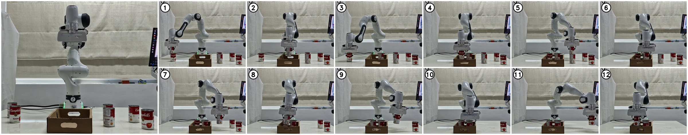
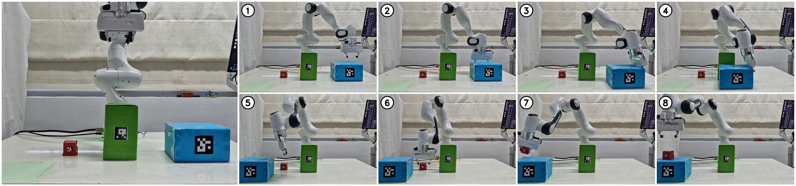
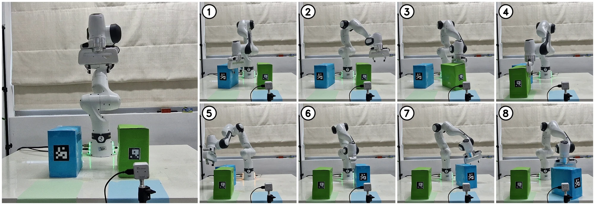

Video
Overview
Large language models plan tasks well but cannot see geometry. ForeSight-TAMP keeps the geometry outside the model. For every action, an action-conditioned feasibility map (ACFM) generates candidate parameters in the state the earlier actions leave. Hard masks reject infeasible candidates, soft layers rank the rest, and a simulator rollout validates the top ones. The LLM selects among the validated candidates by identifier, and the complete plan is rehearsed in simulation before anything is committed.
One action, one map
action 1 · rankThis animation illustrates the interface for a placement action. The grid is the candidate domain inside a container. The planner never sees the grid, only text rows like these, and it answers with an identifier:
After each placement the map is rebuilt in the new state, so later choices account for earlier ones.
Real Robot Demonstrations Real Robot
Franka Research 3 with a parallel gripper. Grounding DINO detects the objects and FoundationPose estimates and tracks their 6-DoF poses; ArUco markers give the poses of the boxes in the pushing tasks. The maps are built from these poses and the accepted plan is sent to the robot. Each scenario was run 20 times with rehearsal and 20 times without. The clips are sped up to the same length.

| Scenario | Without rehearsal | With rehearsal |
|---|---|---|
| YCB object packing | 17/20 | 18/20 |
| Obstacle-aware push-stack | 16/20 | 17/20 |
| Multi-zone pushing | 16/20 | 17/20 |
| Overall | 49/60 (81.7%) | 52/60 (86.7%) |
The eight failures with rehearsal were four pose-estimation errors, two grasp failures and two inverse-kinematics failures. Three additional successes do not establish a reliable difference between the conditions.
Manipulation Simulation Demos Simulation
Ten scenarios in PyBullet with a Franka Research 3, across packing, pushing, shelf placement, stacking and Tower of Hanoi, with shortest plans of 3 to 30 primitives. Nine of them are shown here. Each clip shows only the committed execution, from the initial scene to the goal, re-timed to 35 seconds.
The success count is ForeSight's task-planning success over 18 episodes (six language models, three trials each). The clips are illustrative runs of the released code.

Method Details
Geometric reasoning stays outside the language model. The LLM decides what to do, and chooses where by identifier, from rows that have already passed the hard masks and a simulator rollout.

Action-Conditioned Feasibility Maps
For each action template, an ACFM evaluates candidate parameters in the predicted state that the earlier actions leave: placement poses and orientations in a container, support surfaces on shelves and stacks, disk-to-peg moves in Tower of Hanoi, and contact configurations and waypoints for pushing.
Hard masks admit a candidate only if it passes every applicable check: workspace bounds, footprint collision, reachability, and the support or contact requirement of the action. Soft layers then rank the survivors by clearance, inverse-kinematics quality, support stability, disturbance avoidance and failure history. The top-ranked candidates are rolled out in simulation within a per-action quota, and only candidates that pass both the masks and the rollout become selectable.
Geometry-to-Language Interface
Validated candidates are serialized as text rows that pair an identifier with its parameters, score and a short feasibility note. The LLM returns an identifier, never coordinates. The framework checks the reply against the validated set and resolves the parameters outside the model, so a malformed or off-list reply is rejected and cannot bind an unvalidated parameter. A single remaining candidate, or a task-specific reference rule in the pushing and Hanoi tasks, binds without a further request.
Rehearsal and Map-Grounded Recovery
Once every action is instantiated, the complete plan is rehearsed from a saved simulator state, with a stability check after each placement, and the state is restored afterwards. A rejected plan commits nothing: the framework reports the failing step and its cause, and uses the recorded map alternatives to suggest a revision, such as a different placement that frees a later approach. An accepted plan executes its cached, state-matched trajectories.
Under state-consistent simulation, the analysis shows that replaying an accepted rehearsal reproduces the rehearsed states, that an arbitrary LLM output cannot bind a candidate that failed validation, and when a grid and a fixed validation quota find a feasible candidate. These are conditional properties of the simulated system, not guarantees of physical execution.


Fig. 3
Fig. 4Results
900 episodes: five methods, ten scenarios and six language models (two hosted, four served locally), three trials each, with at most ten LLM requests per trial. The baselines are controlled adaptations of the original systems, run on textual simulator states.
Overall Task-Planning Success
Share of 180 episodes per method that reach the goal
Factorial Ablation
60 trials per configuration (GPT-4o-mini and Qwen3.6-35B-A3B)
Discarded execution per episode: 8.53 for the base planner, 1.27 with rehearsal only, 0.00 in both ACFM configurations.
| Family | Scenario | ViLaIn-TAMP-style | OWL-TAMP-style | VLM-TAMP-style | LLM3-FS | ForeSight |
|---|
| Metric | ViLaIn | OWL | VLM | LLM3-FS | ForeSight |
|---|---|---|---|---|---|
| Total time (s) | 81 | 84 | 124 | 185 | 111.1 |
| Rollout (s) | 12 | 12 | 10 | 24 | 77 |
| Motion-planner calls | 29 | 27 | 23 | 47 | 98 |
| Discarded primitives | 1.7 | 1.5 | 1.2 | 16.0 | 0.0 |
ForeSight spends most of its time validating candidates. The methods share the LLM request budget but not a computation budget, so the comparison is not compute-matched.
| Control | Trials | Success |
|---|---|---|
| Top-ranked binding, no LLM selection | 30 | 100% |
| No soft ordering | 60 | 100% |
| Matched rollout on the raw domain | 30 | 60% |
The gain comes with validating hard-filtered candidates, not with LLM selection or soft ranking: under the same rollout quotas, validating unfiltered candidates reaches 60%. The top-ranked and matched-rollout controls use GPT-4o-mini only.
Hardware Executions



Citation
@article{uddin2026foresight,
title = {ForeSight-TAMP: Action-Conditioned Feasibility Maps for
Spatially Grounded LLM Task and Motion Planning},
author = {Ud Din, Muhayy and Irfan, Mughni and Nader, Ahmed and
Seneviratne, Lakmal and Hussain, Irfan},
journal = {Preprint submitted to Elsevier},
year = {2026},
url = {https://github.com/Muhayyuddin/forsight-tamp}
}